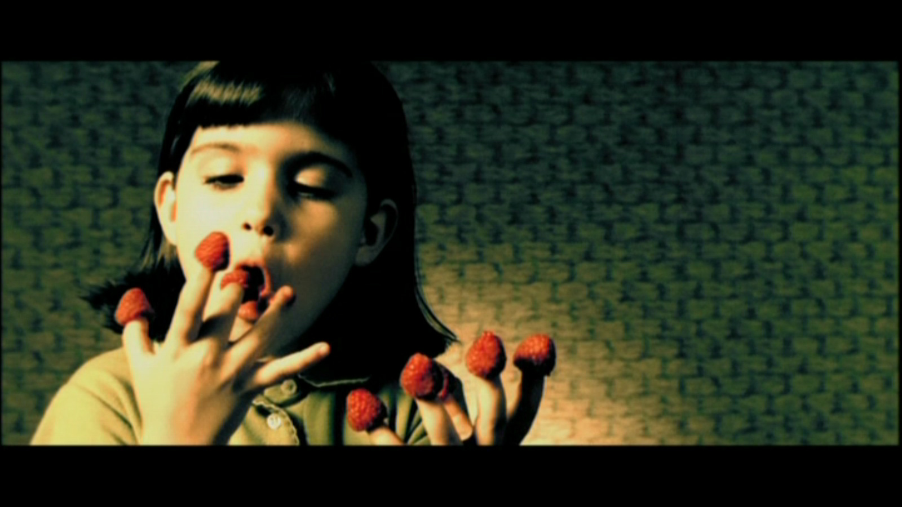

 Amélie Poulain (Tautou) is born in February 1974 and raised by eccentric parents who – incorrectly believing that she has a heart defect – decide to home school her. To cope with her loneliness, Amélie develops an active imagination and a mischievous personality. When Amélie is six, her mother, Amandine (Lorella Cravotta), is killed when a suicidal Canadian tourist jumps from a church roof and lands on her. As a result, her father Raphaël's (Rufus) withdrawal from society worsens. Amélie leaves home at the age of 18 and becomes a waitress at the Café des 2 Moulins in Montmartre, which is staffed and frequented by a collection of eccentrics. Spurning romantic relationships after a few disappointing efforts, she finds contentment in simple pleasures and lets her imagination roam free.
On 30 August 1997, startled by the news of the death of Princess Diana, Amélie drops a plastic perfume-stopper which dislodges a wall tile and accidentally reveals an old metal box of childhood memorabilia hidden by a boy who lived in her apartment decades earlier. Amélie resolves to track down the boy and return the box to him. She promises herself that if it makes him happy, she will devote her life to bringing happiness to others.
After inquiring the apartment's concierge and several old tenants about the boy's identity, Amélie meets her reclusive neighbour, Raymond Dufayel (Serge Merlin), an artist with brittle bone disease who repaints Luncheon of the Boating Party by Pierre-Auguste Renoir every year. He correctly recalls the boy's name as "Bretodeau". Amélie quickly finds the man, Dominique Bretodeau (Maurice Bénichou), and surreptitiously gives him the box. Moved to tears by the discovery and the memories it holds, Bretodeau resolves to reconcile with his estranged daughter and the grandson he has never met. Amélie happily embarks on her new mission.
Amélie secretly executes complex schemes that affect the lives of those around her. She escorts a blind man to the Métro station, giving him a rich description of the street scenes he passes. She persuades her father to follow his dream of touring the world by stealing his garden gnome and having a flight attendant friend airmail pictures of it posing with landmarks from all over the world. She starts a romance between her hypochondriacal co-worker Georgette (Isabelle Nanty) and Joseph (Dominique Pinon), one of the customers in the bar. She convinces Madeleine Wells (Yolande Moreau), who lives on her block of flats, that the husband who abandoned her had sent her a final conciliatory love letter just before his accidental death years before. She uses gaslighting tactics on Collignon (Urbain Cancelier), the nasty greengrocer. Mentally exhausted, Collignon no longer abuses his meek but good-natured assistant Lucien (Jamel Debbouze). A delighted Lucien takes charge at the grocery stand.
Mr. Dufayel, having observed Amélie, begins a conversation with her about his painting, a copy of Luncheon of the Boating Party. Although he has copied the same painting 20 times, he has never quite captured the look of the girl drinking a glass of water. They discuss the meaning of this character, and over several conversations Amélie begins projecting her loneliness onto the image. Dufayel recognizes this, and uses the girl in the painting to push Amélie to examine her attraction to a quirky young man, Nino Quincampoix (Mathieu Kassovitz), who collects the discarded photographs of strangers from passport photo booths. When Amélie bumps into Nino a second time, she realizes she is falling in love with him. He accidentally drops a photo album in the street. Amélie retrieves it.
Amélie plays a cat-and-mouse game with Nino around Paris before returning his treasured album anonymously. After arranging a meeting at the 2 Moulins, Amélie panics and tries to deny her identity. Her co-worker, Gina (Clotilde Mollet), concerned for Amélie's well-being, screens Nino for her; Joseph's comment about this misleads Amélie to believe she has lost Nino to Gina. It takes Dufayel's insight to give her the courage to pursue Nino, resulting in a romantic night together and the beginning of a relationship, and Amélie finally finds happiness for herself.
On Rotten Tomatoes, the film has an 89% "Certified Fresh" rating, based on 177 reviews, with an average rating of 8.1/10. The site's critical consensus reads, "The feel-good Amélie is a lively, fanciful charmer, showcasing Audrey Tautou as its delightful heroine".[9] On Metacritic, the film has a score of 69 out of 100, based on 31 critics, indicating "generally favorable reviews".